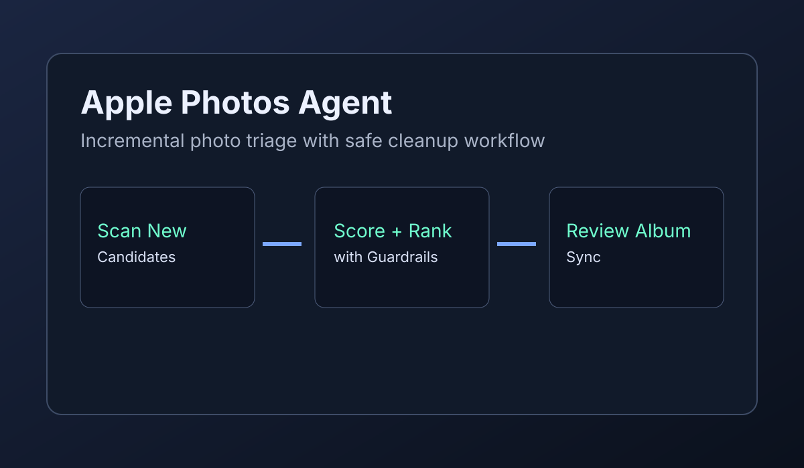

Computer Vision + Automation
Apple Photos Agent (OpenClaw)
Fully shipped to git with supporting project documentation, including a dedicated whitepaper describing architecture, safeguards, and run workflow for large Apple Photos libraries.
- Git-complete workflow: indexing, candidate selection, scoring, and album sync
- Includes conservative guardrails for people/pets/favorites and confidence thresholds
- Documented with a project whitepaper for architecture and operating model